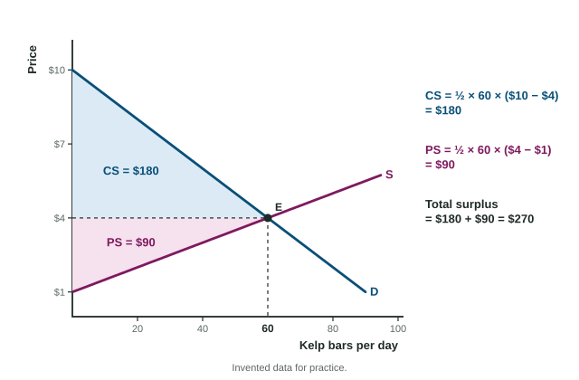

Market Equilibrium and Consumer and Producer Surplus
A market is in equilibrium at the price where quantity demanded equals quantity supplied.
Part 1 · Hook
Why this matters
Part 2 · Before you start
What this builds on
Part 3 · Prerequisite check
Quick check before you start
1. The area of a triangle is
- one half times base times height
- base times height
- base plus height
- two times base times height
Show the answer
A triangle is half of a rectangle with the same base and height.
- Correct: one half times base times height:
- base times height:
- base plus height:
- two times base times height:
2. A demand curve shows, for each quantity, the
- most buyers are willing to pay for that unit
- least sellers will accept
- price the government sets
- total spending of buyers
Show the answer
Read up from a quantity to demand: the most a buyer will pay for that unit.
- Correct: most buyers are willing to pay for that unit:
- least sellers will accept:
- price the government sets:
- total spending of buyers:
3. A supply curve slopes up because
- sellers offer more only at higher prices
- buyers want more at higher prices
- the number of sellers falls
- prices are fixed
Show the answer
A higher price covers the rising cost of extra output.
- Correct: sellers offer more only at higher prices:
- buyers want more at higher prices:
- the number of sellers falls:
- prices are fixed:
Part 4 · See it
See it first

Part 5 · Step by step
How it works, step by step
- A unit is traded where demand lies above supplyit is worth more to the buyer than it costs the seller to supply
- Trading it adds that gap to total surplusbuyers and sellers keep trading units up to where the curves cross
- At the equilibrium quantity every such unit is traded and no unit worth less istotal surplus (consumer plus producer surplus) is as large as it can be
Part 6 · Key ideas
Key ideas
- Market equilibrium: the price where quantity demanded equals quantity supplied, where the curves cross. Mark PE and QE on the axes.
- Consumer surplus (CS): what buyers would pay minus what they pay. The area under demand, above the price, out to the quantity traded.
- Producer surplus (PS): the price minus the least sellers would accept. The area above supply, below the price, out to the quantity traded.
- Total surplus = CS + PS. In a competitive market with no other problems, it is largest at equilibrium.
- For straight lines, each surplus is a triangle: base height.
Part 7 · Misconception
A common mistake
The wrong idea: Consumer surplus is the money buyers spend, the rectangle of price times quantity.
What actually happens: Spending (price times quantity) is not a gain to buyers. Consumer surplus is the gap between what buyers would pay and what they do pay: the triangle under demand and above the price.
Part 8 · Check yourself
Check yourself
Exam-style questions. Anything you miss goes into your review queue.
Data
The market for kelp bars in Port Ancel
| Price | Quantity demanded | Quantity supplied |
|---|---|---|
| $2 | 80 | 20 |
| $3 | 70 | 40 |
| $4 | 60 | 60 |
| $5 | 50 | 80 |
| $6 | 40 | 100 |
1. What are the equilibrium price and quantity of kelp bars?
- $3 and 70 bars
- $5 and 80 bars
- $4 and 60 bars
- $6 and 100 bars
Show the answer
At $4, buyers want 60 bars and sellers offer 60: quantity demanded equals quantity supplied, so the market clears at $4 and 60 bars.
- $3 and 70 bars: At $3 sellers offer only 40 of the 70 bars wanted.
- $5 and 80 bars: At $5 buyers want only 50 of the 80 bars offered.
- Correct: $4 and 60 bars: Right: 60 demanded and 60 supplied.
- $6 and 100 bars: At $6 buyers want 40 bars, far fewer than are offered.
2. Calculate consumer surplus in the kelp bar market at equilibrium, in dollars per day.
Type a number. A four-function calculator is allowed, as on the exam.
Show the answer
Consumer surplus is the triangle under demand and above the price, out to the quantity traded:
- Answer: 180
Graph
A competitive market with its areas lettered
3. In the graph, which area is consumer surplus?
- Area a
- Area b
- Areas a and b together
- The area to the right of the equilibrium quantity
Show the answer
Consumer surplus lies under the demand curve and above the equilibrium price, from zero out to the equilibrium quantity: area a.
- Correct: Area a: Right: under demand, above the price.
- Area b: Area b lies above supply and below the price: producer surplus.
- Areas a and b together: Together they are total surplus.
- The area to the right of the equilibrium quantity: No units are traded there, so no surplus is earned.
4. In the graph, which area is producer surplus?
- Area a
- Areas a and b together
- The area under the supply curve
- Area b
Show the answer
Producer surplus lies above the supply curve and below the equilibrium price, out to the equilibrium quantity: area b.
- Area a: Area a is under demand and above the price: consumer surplus.
- Areas a and b together: Together they are total surplus.
- The area under the supply curve: That is what it costs sellers to supply the units, not their surplus.
- Correct: Area b: Right: above supply, below the price.
5. Shade consumer surplus at the market equilibrium.
Work on the graph (it needs JavaScript), then check.
Show the answer
Consumer surplus is the triangle under the demand curve and above the equilibrium price, from zero to the equilibrium quantity.
- Key: shade consumer surplus
Part 9 · Summary
Summary
Part 10 · Up next
What comes next
Part 11 · Connections